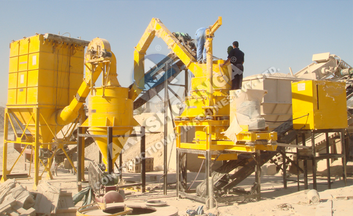

The Main Advantages of Sand Manufacturing Plant
Sand manufacturing plant has high
automation, low running cost, high broken rate, also achieved more
crushing less grinding process, mechanism sand conforms to the
national standards of building sand, granularity is uniform and the
grading is reasonable.
The Performance Characteristics of
Sand Manufacturing Plant
1. Hydraulic drive cover device,
it enables the detection of parts in the crushing cavity more
convenient, saves time and energy. Bearing adopts international
famous brand SKF or TIMKEN, to ensure the smooth operation and low
failure rate.
Overview
Technical Parameter
Send
inquiry
The Main Advantages of Sand Manufacturing Plant
Sand
manufacturing plant has high automation, low running cost, high
broken rate, also achieved more crushing less grinding process,
mechanism sand conforms to the national standards of building sand,
granularity is uniform and the grading is reasonable.
The
Performance Characteristics of Sand Manufacturing Plant
1.
Hydraulic drive cover device, it enables the detection of parts in
the crushing cavity more convenient, saves time and energy. Bearing
adopts international famous brand SKF or TIMKEN, to ensure the smooth
operation and low failure rate.
sand_manufacturing_plant
2. The reasonable feeding crushing
structure, it can easily achieve the transformation of "stone
hiting stone" and "stone hiting iron", to break and
shape the material.
3. Unique dustproof sealing systems, it
totally avoids external dust into the lubrication part.
4. Longer
service life has been achieve, because the design of the reasonable
impact angle in crushing chamber lessen the friction of material and
wearing parts.